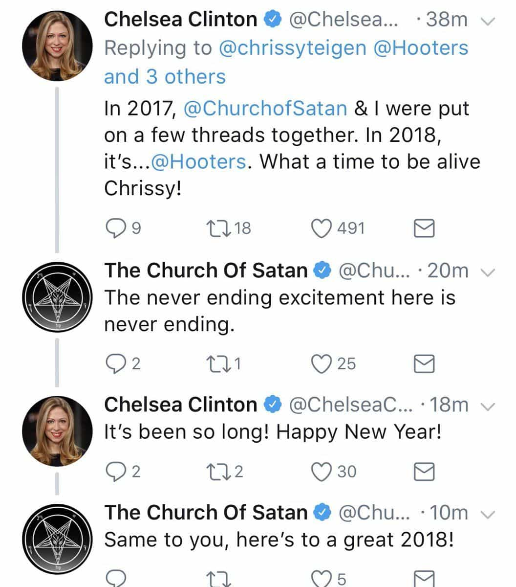

Michael is the author of Staying Married in a Degenerate Age. Follow him on Twitter or Facebook. You can read more of his writing at Honor and Daring.


The election of Donald Trump has caused many people to lose their senses. We now have news anchors crying on the air, former conservatives siding against their own president, and people acting like Harry Potter is some sort of blueprint to resist Trump. But one of the oddest side effects of the Trump victory is that it has revived interest in Satanism and witchcraft.

To be a politician in this politically correct age, you must never say something that might offend certain groups. For example, you will never hear a politician saying something bad about Islam. You can bet that someone like Hillary Clinton’s daughter Chelsea is extra careful about everything she says or writes on social media.
Thus, it was a little bit of a surprise when Chelsea Clinton wished the Church of Satan a Happy New Year. Now, no one is accusing Chelsea of being a devil worshiper. The Church of Satan itself seems more like a bunch of Ayn Rand devotees who are into rituals than literal worshipers of the prince of darkness. But the Church of Satan is overtly anti-Christian. The founder of the group, Anton LaVey, wrote in an introduction his Satanic Bible that he wanted to defy the Christian religion.
By interacting with the Church of Satan, Chelsea gave her 2.5 million followers that the Church of Satan is a legitimate part of the “Resistance” to President Trump. By bestowing “Resistance” status to an anti-Christian group, Chelsea is drawing the battle lines more clearly: It is the Christian Trump supporters on one side and anti-Christian atheists on the other. And if those atheists won’t be excluded if they happen to engage in strange rituals.
In the spiritual desert that is America, it is not surprising that people are turning to various alternatives. On Twitter, many accounts have sprung up of young women who are into veganism, yoga, herbs, and astrology. And it is not just women who are into it. “Kundalini Dick” is a popular black Twitter account that teaches his followers about astrology and sex magic.
Magical practices are not limited to social media. The Bravo television channel recent ran an episode of Vanderpump Rules that featured the women members of the show putting a spell on a male cast member to stop him from cheating on his girlfriend using a needle, a lemon, and candles.
This new age seems to affect millennials the most. These young people are the end result of our culture of materialism and hedonism combined with political policies that only benefit a tiny cadre of globalists.
It is easy to blame the misguided people who dabble in witchcraft, Satanism, or any other dubious sect, and to a certain extent they deserve to be blamed. But ultimately, I think the full blame must fall on those Christian bishops, priests, and pastors who are charged with preaching the fullness of the Christian message—even the difficult parts.
For decades now, the Christian churches have been willing to water down the gospel to win the praise of the world. This has been most evident with the mainline Protestant churches, who march lockstep with the progressive culture. As soon as the US Supreme Court legalized same-sex marriage, the National Cathedral, which is part of the Episcopal Church, immediately announced that it was offering to perform same-sex marriage ceremonies. There was no question of preserving traditional Christian teaching.
But it is not just the mainline Protestants who have yielded to the culture. The Catholic Church doesn’t openly flout Christian doctrine—that would be too obvious—but they have created an environment where the more difficult teachings of the gospel are never taught or enforced. If you want proof of this, ask yourself when was the last time a bishop barred a pro-abortion politician or turned down a photo-op with one?
Evangelicals, once a bastion of traditional culture in the United States, are no better. I met an evangelical pastor at my son’s preschool. I was expecting him to be a kindred spirit, but quickly learned that he suffered from an advanced case of Trump derangement syndrome. He was no outlier. Evangelical pastors now signal harder for social justice than they do for the teaching of Christ, as these tweets by Seattle pastor Eugene Cho demonstrate:
God loves the nations. The Scriptures make this clear. No one – let alone, the leader of a country – should ever disparage other nations with such a disgusting comment. To Haiti & many countries of Africa: We are so sorry. Please accept our apologies on behalf of President Trump.
— Eugene Cho (@EugeneCho) January 12, 2018
Great news! Signed checks today for about $230,000 for ongoing relief work with our partners for Syrian refugees. Why? Because refugees are people…and people matter to God.
Join us. Please consider an end-of-year donation to @OneDaysWages: https://t.co/Sh1gvgNZ74 pic.twitter.com/hXtRutvBP5
— Eugene Cho (@EugeneCho) December 30, 2017
The bottom line is that people who are dabbling in witchcraft and Satanism have probably only been exposed to a truncated Christianity that has been purged not of its challenging elements, but also of any connection to the Divine. Why become a Christian if it teaches exactly what the rest of the world teaches? Why bother going to church if it has about as much spirit as an NGO? People inherently sense that this modern form of Christianity has no power. There is no sense of awe. People are voting with their feet. Several friends have even that even the great Evangelical megachurches are losing members in droves.
I highly doubt that Americans are going to convert to Wicca or Satanism in great masses. These things are only symptoms of the bigger problem: Americans are spiritually dead. We have let ourselves become debased. We have our fill of porn, meaningless sex, entertainment, drugs, alcohol, and the never-ending pursuit of wealth. What we don’t have is any higher purpose or meaning. If things continue on our present trajectory we will live and die as unthinking beasts, rutting our way to perdition.
It doesn’t have to be this way. We can choose to live as men even if our culture and our institutions have abandoned us.
Read More: Cardinal Raymond Leo Burke Rebukes Feminization Of Catholic Church